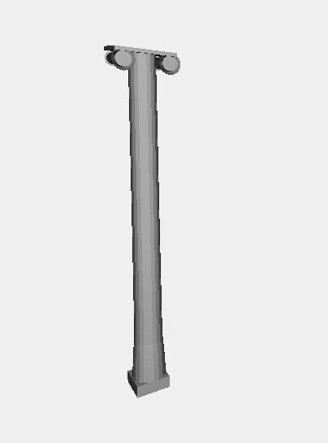
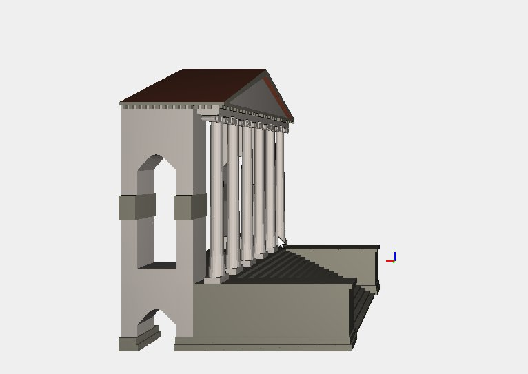
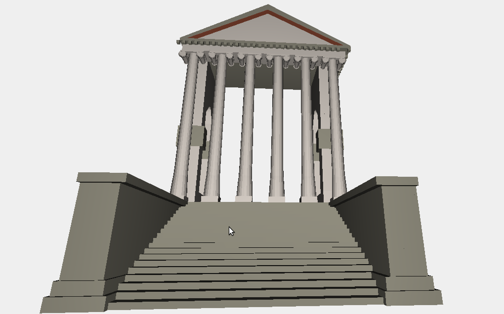
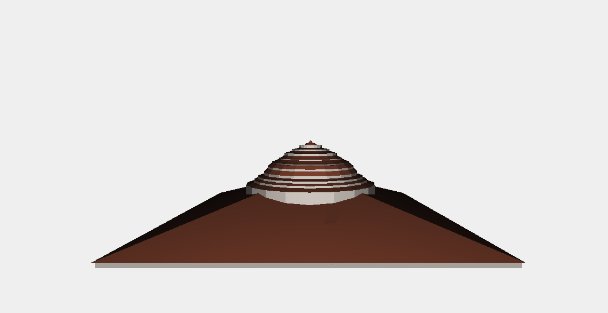

Introduction
Villa La Rotonda is a Renaissance villa just outside Vicenza, northern Italy, designed by Andrea Palladio. The proper name is Villa Almerico Capra, but it is also known as La Rotonda, Villa Rotonda, Villa Capra and Villa Almerico. The name "Capra" derives from the Capra brothers, who completed the building after it was ceded to them in 1591. Like other works by Palladio in Vicenza and the surrounding area, the building is conserved as part of the World Heritage Site "City of Vicenza and the Palladian Villas of the Veneto".>
In 1565 a priest, Paolo Almerico, on his retirement from the Vatican (as referendario apostolico of Pope Pius IV and afterwards Pius V), decided to return to his home town of Vicenza in the Venetian countryside and build a country house.
This house, later known as 'La Rotonda', was to be one of Palladio's best-known legacies to the architectural world. Villa Capra may have inspired a thousand subsequent buildings, but the villa was itself inspired by the Pantheon in Rome.
History
The opportunity to realize this vision came to Palladio from a special person, Paolo Almerico
(Vicenza 1514–1589), who was not only a papal prelate but also an intellectual, a member of a
refined cultural circle of that time, a poet and a man of letters, who wanted to build for himself a
‘villa’, just out of Vicenza, for his retirement, after a career in Rome at the Papal Court.
Works started in 1567 and were quickly completed, because by 1571 [1569 according to
Beltramini] Paolo Almerico was already living at La Rotonda. After his death, the villa passed to
Almerico’s son Virginio Almerico who then sold it to Odorico and Mario Capra in 1591. Since
1911 La Rotonda has been owned by the Valmarana family of Venezia.
Palladio planned 20 villas but only two of them, La Rotonda and Villa Trissino di Meledo (that
would never be built) have the peculiar plan that sets them apart: the central round hall with the
domed vault, inscribed in a square, with four facades, each with a projecting portico and steps, 6
Ionic columns.
Andrea Palladio intended to transfer into civil architecture a ‘sacred’ inspiration, using a plan
already present in religious architecture (such as S. Pietro in Montorio temple in Rome); this idea
comes out of his well known archaeological studies and is suggested by many scholars to be derived
from the Roman temples. The particular site, the special personality of Paolo Almerico and
Palladio’s meditations on ancient art came together in this unique opportunity for Palladio, who was
finally able to realise his vision of a villa-temple.
The decoration of La Rotonda started at the end of 16th century. Lorenzo Rubini, who is named by
Palladio in his book, is thought to have been responsible for the statues on the stairs, whilst
Giambattista Albanese those on the porticos and roof.
At the beginning of the 17th century,
Oddorico Capra commissioned the frescos and stuccoes inside the dome, in the four corners rooms
and in the little rooms. The frescos are thought to have been completed by Giambattista and
Alessandro Maganza, the stuccoes by Agostino Rubini. The major rooms are enriched with lavish
marble fireplaces and beautiful stucco decorated cowls, thought to be by Agostino Rubini and
Ottaviano Ridolfi.
The floors are made in precious venetian battuto, a special stucco made with a
mix of lime and coloured marble grit, whilst in other rooms the floor are laid with hexagonal tiles.
The last decorations were made at the beginning of 18th century, when the French painter Louis
Dorigny painted the frescos of the hall and the corridors for the wedding of Marzio and Cecilia
Capra. The villa was only lightly modified in the following centuries: between 1725 and 1740, the
third floor was transformed and divided by Muttoni; until 1750 the attic area was not habitable.
The current state of the villa dates to 1976, at which time the Valmarana family set in place an
ongoing program of maintenance, restoration and preservation. The grounds of villa have been open
to the public from 1980, and from 1986 access was provided to the interior of the building as well.

My Project
The project is written in Javascript and using functions written in plasm for 3D modeling of the villa. The villa has been substantially broken down into 3 different objects, ie the outbuildings, the stairway entrance and the villa.
For the implementation, the project has been divided into 3 pieces:
- Porticus with colonnade ;
- Walls ;
- Roof ;
The porticus with colonnade
This piece of project has been subdivided into some pieces: the stairs, the colonnade and the porticus. The stairs have been designed with SIMPLEX GRID method; the porticus has been realized with BEZIER, HERMITE and NUBS curves.
This is how i realize the column:

The code:
var column = function(r,h,off_x,off_y,off_z,closer){
var columnpoint = [[r+0.1,0,0],[r+0.08,0,h*0.04],[r+0.06,0,h*0.08],[r+0.03,0,h*0.12],
[r,0,h*0.15],[r-0.05,0,h]]
var n = generate_knots(columnpoint)
var curvebasement = NUBS(S0)(2)(n)(columnpoint);
var curvebasementRS = ROTATIONAL_SURFACE(curvebasement);
var columna = MAP(curvebasementRS)(dominioRot);
var columna1 = T([0,1,2])([off_x,off_y,off_z])(STRUCT([columna]))
if(closer ==0)
return columna1;
else {
var closed1 = DISK(r)()
var closed1_t = T([0,1,2])([off_x,off_y,off_z])(closed1)
var closed_2_t = T([2])([h])(closed1_t)
var cylinderClosed = STRUCT([columna1,closed1_t,closed_2_t])
return cylinderClosed;
}
};
This is the porticus

The code:
var p_tetto_avanti1 = [[8,9.4,15.2],[8,15.4,18.5],[0,0,0],[0,0,0]]
var p_tetto_avanti2 = [[8,15.4,18.5],[8,21.4,15.2],[0,0,0],[0,0,0]]
var p_tetto_avanti21 = [[8,9.9,15.2],[8,15.4,18],[0,0,0],[0,0,0]]
var p_tetto_avanti22 = [[8,15.4,18],[8,20.9,15.2],[0,0,0],[0,0,0]]
...
var h_basso_tetto1 = CUBIC_HERMITE(S1)([c_basso_tetto,c_tetto3_d,[0,0,0],[0,0,0]])
var h_basso_tetto2 = CUBIC_HERMITE(S1)([c_basso_tetto,c_tetto4_d,[0,0,0],[0,0,0]])
var horiz_tettus1 = CUBIC_HERMITE(S1)([c_tetto,c_tetto_d,[0,0,0],[0,0,0]])
var horiz_tettus2 = CUBIC_HERMITE(S1)([c_tetto2,c_tetto2_d,[0,0,0],[0,0,0]])
...
var tetto1 = COLOR(marrone_tetto)(MAP(tetus)(domain2D))
var tetto2 = COLOR(marrone_tetto)(MAP(tetus2)(domain2D))
var tetto1_d = COLOR(marrone_tetto)(MAP(tetus_d)(domain2D))
var tetto2_d = COLOR(marrone_tetto)(MAP(tetus2_d)(domain2D))
...
var p_arco = [[11,11.4,11],[11.5,11.4,11.5],[12,11.4,12],
[12.5,11.4,12],[13,11.4,11.5],[13.4,11.4,11]]
var p_arco2 = [[11,10,11],[11.5,10,11.5],[12,10,12],
[12.5,10,12],[13,10,11.5],[13.4,10,11]]
var k_arco = generate_knots(p_arco);
var c_arco = NUBS(S0)(2)(k_arco)(p_arco)
var c_arco2 = NUBS(S0)(2)(k_arco)(p_arco2)
var archi_under_be = BEZIER(S1)([c_arco,c_arco2]) // curva sotto
var control1 = [[11,10,15],[13.4,10,15],[0,0,0],[0,0,0]]; // punti superiori
var control2 = [[11,11.4,15],[13.4,11.4,15],[0,0,0],[0,0,0]];
var c11 = CUBIC_HERMITE(S0)(control1);
var c12 = CUBIC_HERMITE(S0)(control2);
var s1 = BEZIER(S1)([c11,c_arco2])
var s2 = BEZIER(S1)([c12,c_arco])
var s3 = BEZIER(S1)([c11,c12])
Assembled:

The roof
It has been realized using NUBS and ROTATIONAL SURFACE. 
The code :
var puntiCupola_1 = [[8.5,0,0],[8.5,0,1],[8.5,0,1.7]]
var knots_cupola = generate_knots(puntiCupola_1); // Vale per tutte e 19
var curva_cupola_1 = NUBS(S0)(2)(knots_cupola)(puntiCupola_1);
var curvaRotSurf_1 = ROTATIONAL_SURFACE(curva_cupola_1);
var curvaMapRotSurf_1 = MAP(curvaRotSurf_1)(dominioRot);
var puntiCupola_2 = [[8.5,0,1.7],[8,0,1.85],[7.5,0,2]]
var curva_cupola_2 = NUBS(S0)(2)(knots_cupola)(puntiCupola_2);
var curvaRotSurf_2 = ROTATIONAL_SURFACE(curva_cupola_2);
var curvaMapRotSurf_2 = MAP(curvaRotSurf_2)(dominioRot);
var puntiCupola_3 = [[7.5,0,2],[7.5,0,2.12],[7.5,0,2.24]]
var curva_cupola_3 = NUBS(S0)(2)(knots_cupola)(puntiCupola_3);
var curvaRotSurf_3 = ROTATIONAL_SURFACE(curva_cupola_3);
var curvaMapRotSurf_3 = MAP(curvaRotSurf_3)(dominioRot);
...